T03 · Heroes lodge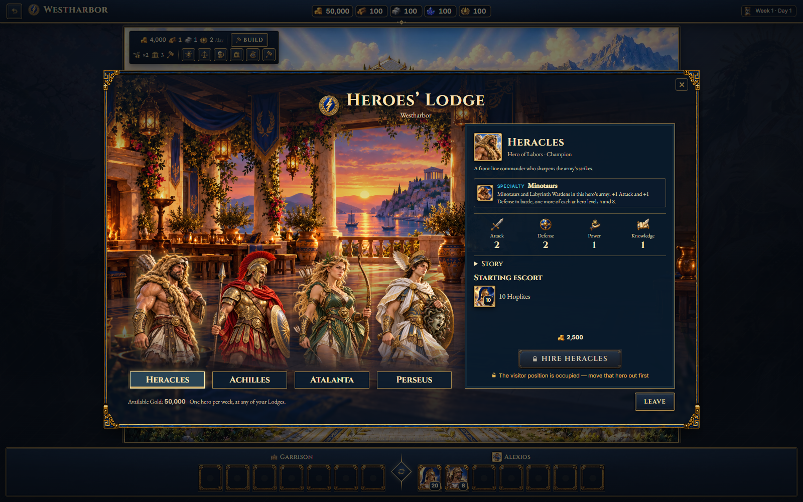
T04 · Artifact merchant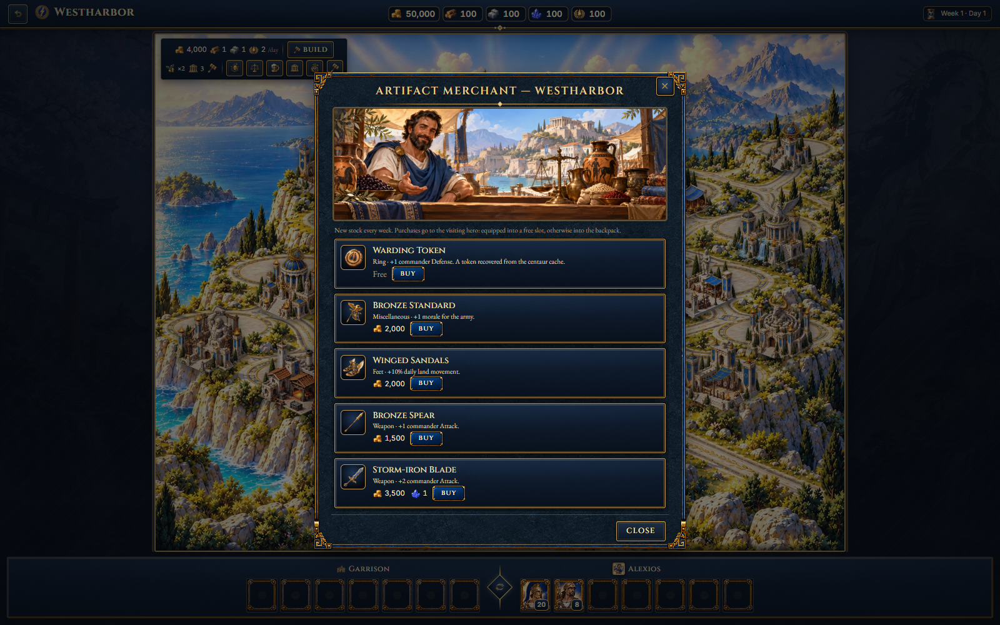
T05 · Workshop wares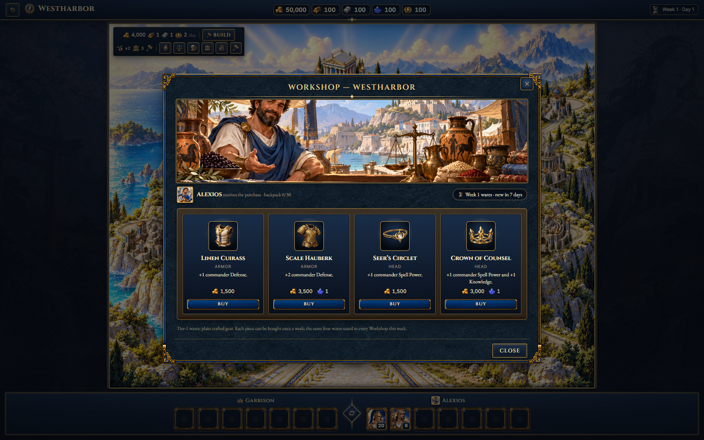
T06 · Temple offering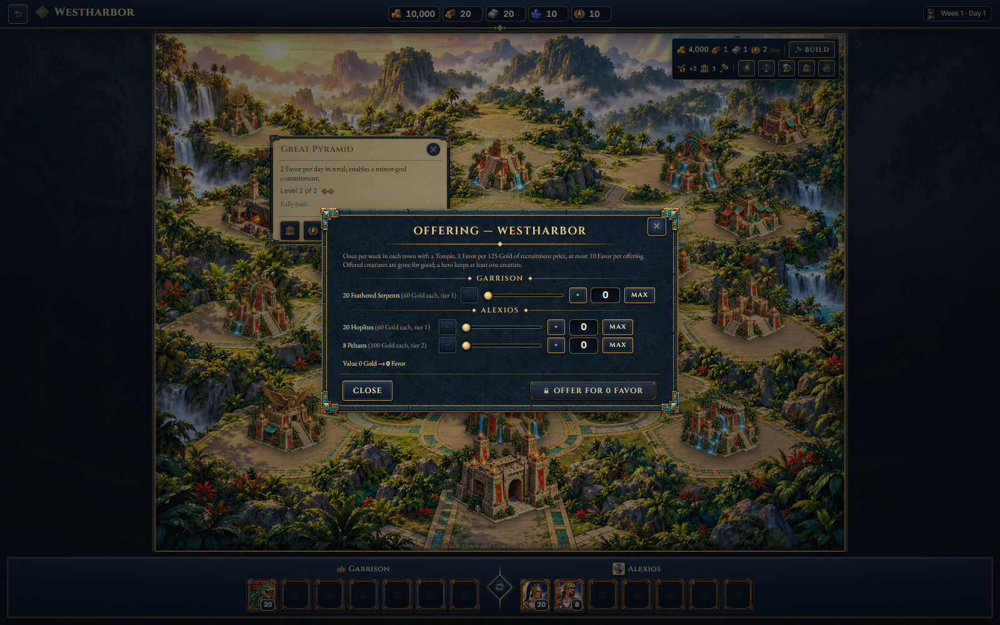
T07 · Divine gifts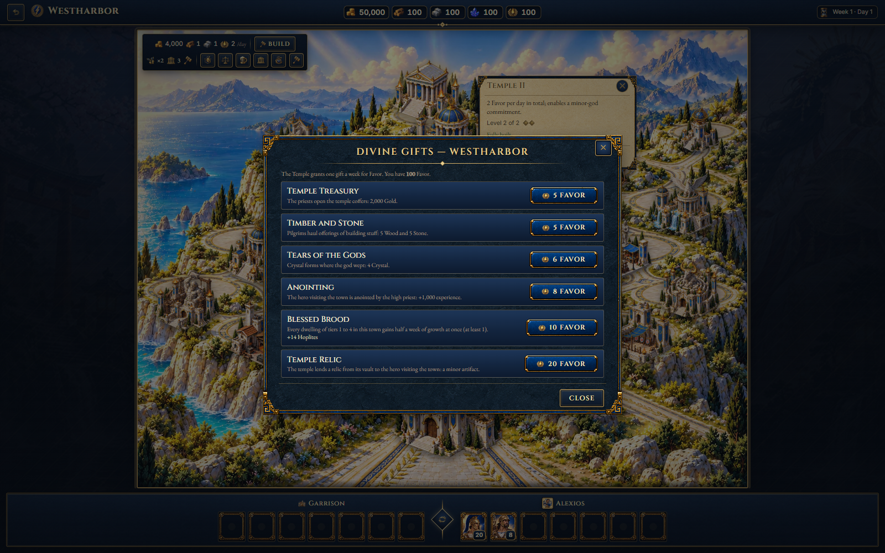
T08 · Construction and upgrade proposal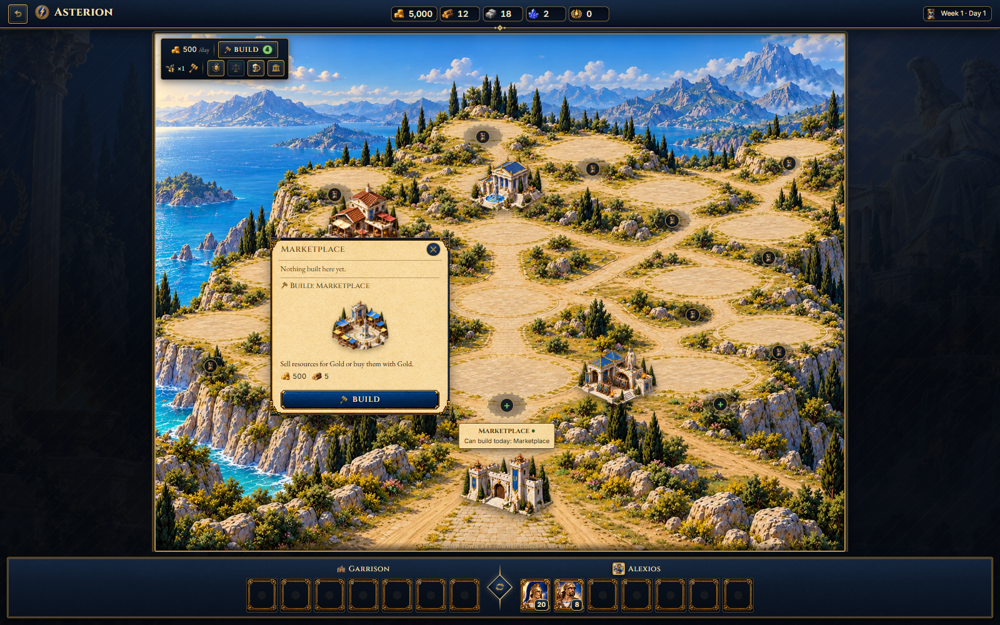
T09 · Town army split dialog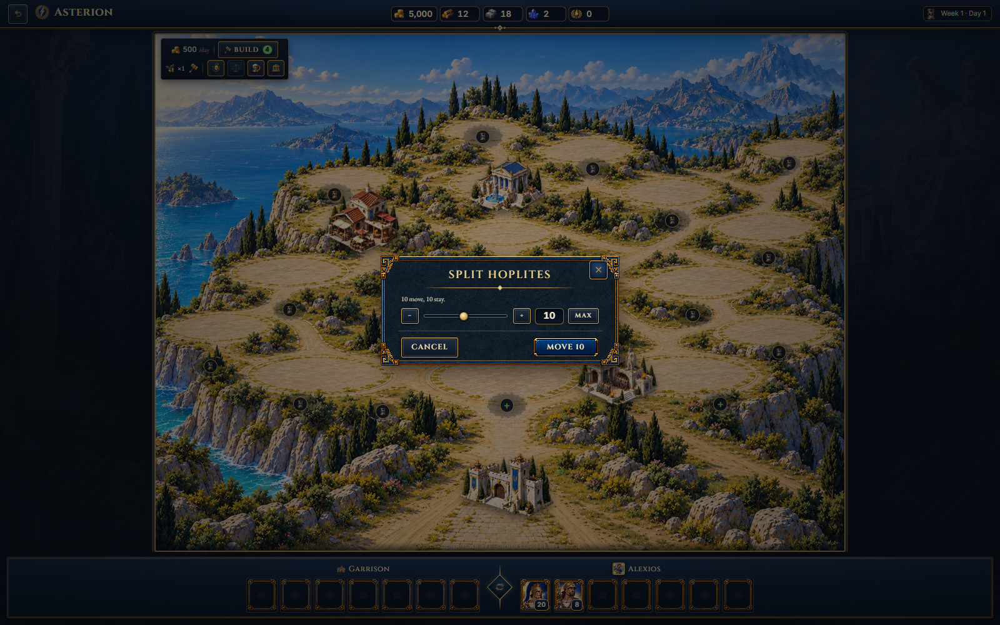
W01 · Neutral creature camp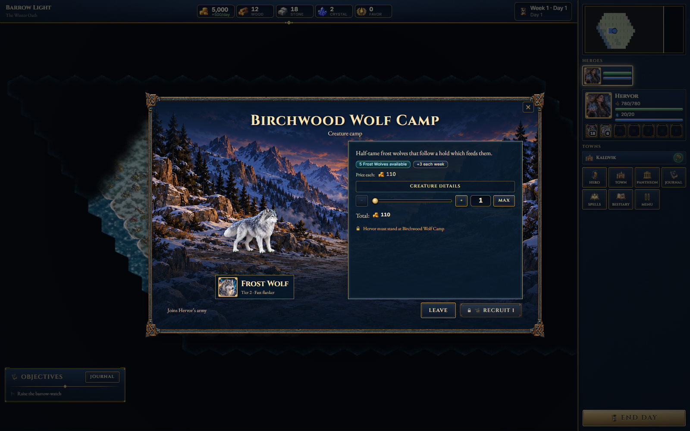
W02 · Map event choice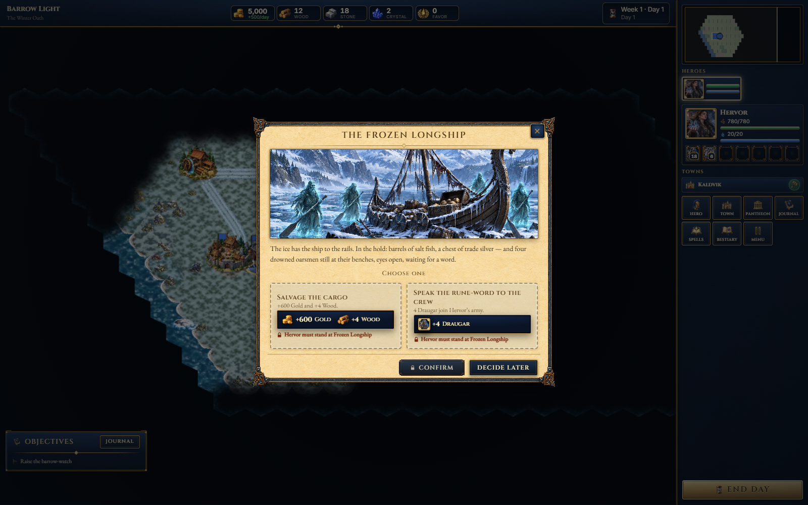
W03 · Treasure chest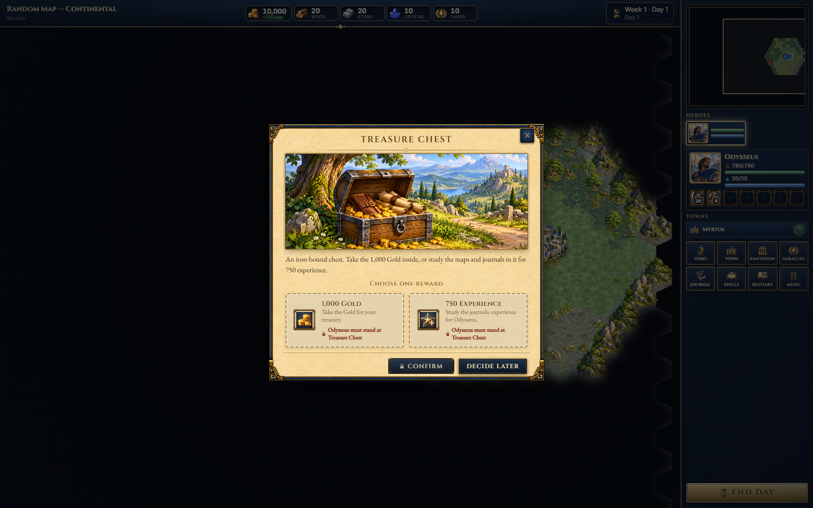
W04 · Quest hut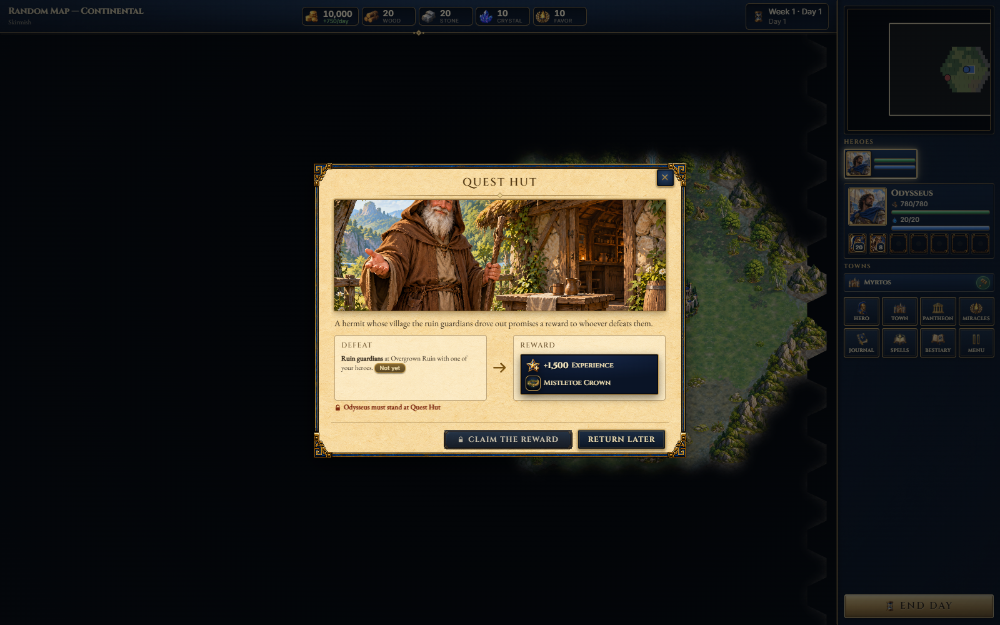
W05 · Beacon activation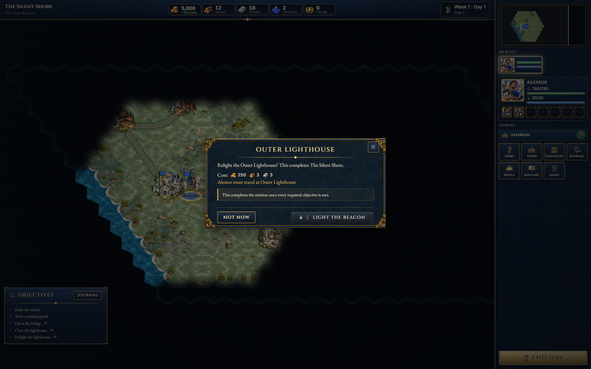